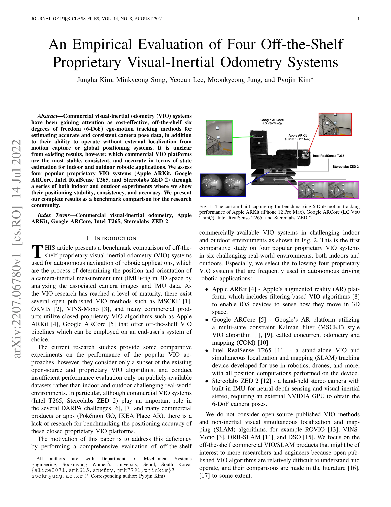
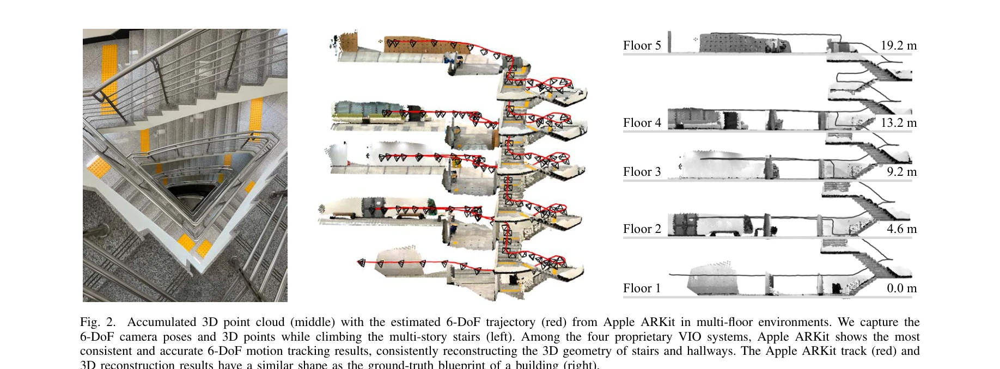

저자: Jungha Kim, Minkyeong Song, Yeoeun Lee, Moonkyeong Jung, Pyojin Kim | 날짜: 2022-07-14 | URL: https://arxiv.org/abs/2207.06780

Fig. 1. The custom-built capture rig for benchmarking 6-DoF motion tracking
Apple ARKit, Google ARCore, Intel RealSense T265, Stereolabs ZED 2 등 4개의 상용 VIO 시스템을 실내외 환경에서 실험하여 6-DoF 위치 추정 성능을 벤치마크 비교한 연구이다.

Fig. 2.
Fig. 1. The custom-built capture rig for benchmarking 6-DoF motion tracking
총평: 본 연구는 산업 및 로봇 분야에서 광범위하게 사용되는 상용 VIO 시스템의 실제 성능을 최초로 체계적으로 벤치마킹한 중요한 기여이며, 실내외 도전적 환경에서의 포괄적 평가를 통해 연구자와 엔지니어에게 실용적인 참고 자료를 제공한다.